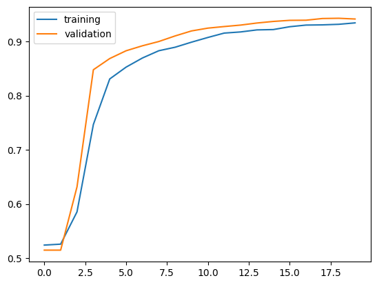
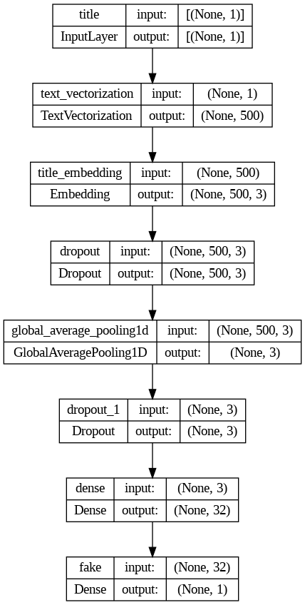
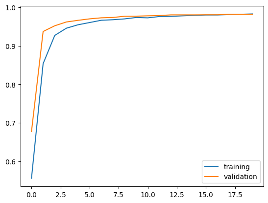
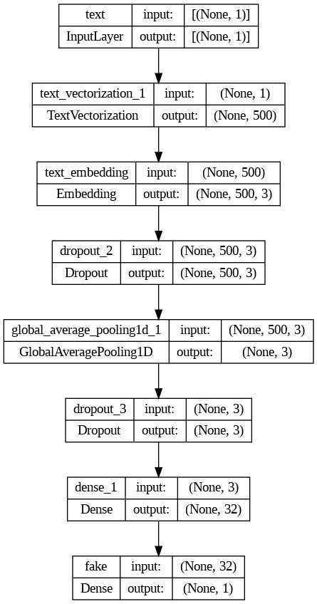
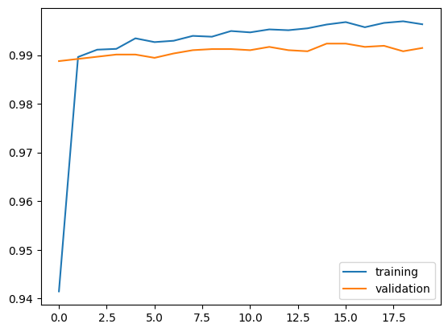
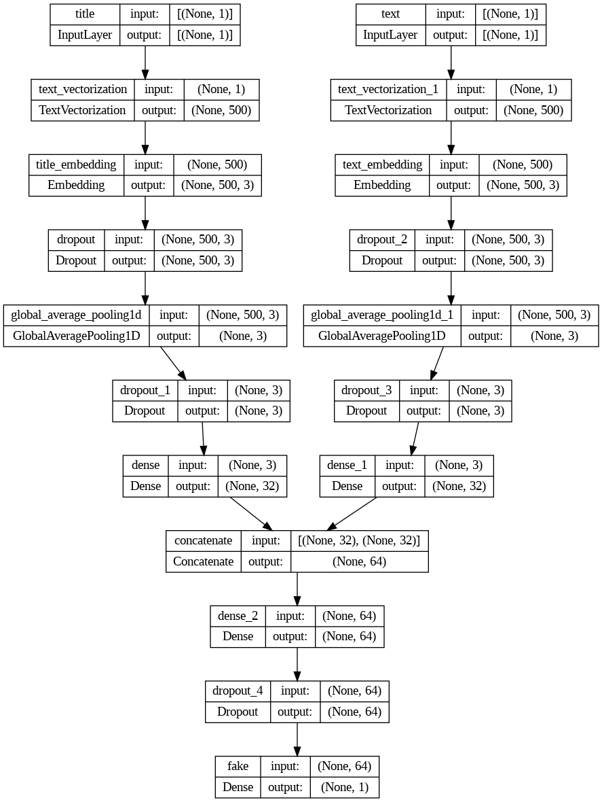

import os
os.environ["KERAS_BACKEND"] = "tensorflow"Introduction
In this blog post, I will show you how to detect fake news using Keras text classification.
import numpy as np
import pandas as pd
import tensorflow as tf
import re
import string
import keras
from keras import layers, losses
from keras.layers import TextVectorization
from sklearn.model_selection import train_test_split
from sklearn.preprocessing import LabelEncoderData Preparation
We first need to load the dataset containing news articles labeled as real or fake.
train_url = "https://github.com/PhilChodrow/PIC16b/blob/master/datasets/fake_news_train.csv?raw=true"
df = pd.read_csv(train_url)df.head()| Unnamed: 0 | title | text | fake | |
|---|---|---|---|---|
| 0 | 17366 | Merkel: Strong result for Austria's FPO 'big c... | German Chancellor Angela Merkel said on Monday... | 0 |
| 1 | 5634 | Trump says Pence will lead voter fraud panel | WEST PALM BEACH, Fla.President Donald Trump sa... | 0 |
| 2 | 17487 | JUST IN: SUSPECTED LEAKER and “Close Confidant... | On December 5, 2017, Circa s Sara Carter warne... | 1 |
| 3 | 12217 | Thyssenkrupp has offered help to Argentina ove... | Germany s Thyssenkrupp, has offered assistance... | 0 |
| 4 | 5535 | Trump say appeals court decision on travel ban... | President Donald Trump on Thursday called the ... | 0 |
Now we are going to define the function called make_dataset. this function will return a dataset and clean the data; remove stopwords from the article text and title, using the nltk. We will change the text to lowercase and remove stopwords to ensure our models do not detect unnecessary words.
def make_dataset(df):
# Change into lowercase
df['title'] = df['title'].str.lower()
df['text'] = df['text'].str.lower()
# Import stopwords with nltk.
import nltk
nltk.download('stopwords')
from nltk.corpus import stopwords
stop = stopwords.words('english')
# Exclude stopwords with Python's list comprehension and pandas.DataFrame.apply.
# Simailr to what was on the StackOverFlow thread
df['title'] = df['title'].apply(lambda x: ' '.join([word for word in x.split() if word not in (stop)]))
df['text'] = df['text'].apply(lambda x: ' '.join([word for word in x.split() if word not in (stop)]))
data = tf.data.Dataset.from_tensor_slices(
(
{
"title": df['title'],
"text": df['text']
},
df['fake'].values
)
)
# Shuffle and batch the dataset
data = data.shuffle(buffer_size=len(df), reshuffle_each_iteration=False)
data = data.batch(100)
return data
data = make_dataset(df)[nltk_data] Downloading package stopwords to /root/nltk_data...
[nltk_data] Unzipping corpora/stopwords.zip.Now that we’ve constructed our primary Dataset, we will split 80% for training and 20% for validation.
train_size = int(0.8 * len(data))
val_size = int(0.2 * len(data))
# Split the dataset
train_dataset = data.take(train_size)
val_dataset = data.skip(train_size).take(val_size)
len(train_dataset), len(val_dataset)(180, 45)Base Rate
Base rate refers to the accuracy of a model that always makes the same guess. Now we will determine the base rate for this data set by examining the labels on the training set.
base_rate = max(df['fake'].mean(), 1 - df['fake'].mean())
print(f'Base rate: {base_rate}')Base rate: 0.522963160942581Vectorization
Before we build our model to detect fake news, we need to transform text data so that our machine learning models can understand and process, and this is called vectorization. We have to vectorize both text and the title. Vectorization will convert those text into numerical vectors.
# preparing a text vectorization layer for tf model
size_vocabulary = 2000
# Define standardization function
def standardization(input_data):
lowercase = tf.strings.lower(input_data)
no_punctuation = tf.strings.regex_replace(lowercase,
'[%s]' % re.escape(string.punctuation), '')
return no_punctuation
title_vectorize_layer = TextVectorization(
standardize=standardization,
max_tokens=size_vocabulary, # only consider this many words
output_mode='int',
output_sequence_length=500)
title_vectorize_layer.adapt(train_dataset.map(lambda x, y: x["title"]))
# Same for the 'text' column
text_vectorize_layer = TextVectorization(
standardize=standardization,
max_tokens=size_vocabulary,
output_mode='int',
output_sequence_length=500)
text_vectorize_layer.adapt(train_dataset.map(lambda x, y: x["text"]))Model 1: Title-Based Detection
The first model will only use the titles of articles to predict whether the news is fake or real.
# Input
title_input = keras.Input(shape=(1,),
name='title',
dtype='string')
# layers for processing the titles, similar to 'lyrics_features' from the lecture notes
title_features = title_vectorize_layer(title_input)
title_features = layers.Embedding(size_vocabulary, 3, name="title_embedding")(title_features)
title_features = layers.Dropout(0.2)(title_features)
title_features = layers.GlobalAveragePooling1D()(title_features)
title_features = layers.Dropout(0.2)(title_features)
title_features = layers.Dense(32, activation="relu")(title_features)
# Output layer for binary classification
output = layers.Dense(1, activation="sigmoid", name="fake")(title_features)
model1 = keras.Model(inputs=title_input,
outputs=output)
model1.compile(optimizer="adam",
loss=losses.BinaryCrossentropy(from_logits=False),
metrics=["accuracy"])
model1.summary()
# Train the model
history1 = model1.fit(train_dataset, validation_data=val_dataset, epochs=20)Model: "model"
_________________________________________________________________
Layer (type) Output Shape Param #
=================================================================
title (InputLayer) [(None, 1)] 0
text_vectorization (TextVe (None, 500) 0
ctorization)
title_embedding (Embedding (None, 500, 3) 6000
)
dropout (Dropout) (None, 500, 3) 0
global_average_pooling1d ( (None, 3) 0
GlobalAveragePooling1D)
dropout_1 (Dropout) (None, 3) 0
dense (Dense) (None, 32) 128
fake (Dense) (None, 1) 33
=================================================================
Total params: 6161 (24.07 KB)
Trainable params: 6161 (24.07 KB)
Non-trainable params: 0 (0.00 Byte)
_________________________________________________________________
Epoch 1/20
180/180 [==============================] - 4s 13ms/step - loss: 0.6918 - accuracy: 0.5241 - val_loss: 0.6923 - val_accuracy: 0.5147
Epoch 2/20
180/180 [==============================] - 3s 16ms/step - loss: 0.6895 - accuracy: 0.5258 - val_loss: 0.6872 - val_accuracy: 0.5147
Epoch 3/20
180/180 [==============================] - 2s 13ms/step - loss: 0.6761 - accuracy: 0.5854 - val_loss: 0.6589 - val_accuracy: 0.6316
Epoch 4/20
180/180 [==============================] - 2s 12ms/step - loss: 0.6254 - accuracy: 0.7467 - val_loss: 0.5790 - val_accuracy: 0.8478
Epoch 5/20
180/180 [==============================] - 2s 12ms/step - loss: 0.5350 - accuracy: 0.8308 - val_loss: 0.4772 - val_accuracy: 0.8685
Epoch 6/20
180/180 [==============================] - 2s 12ms/step - loss: 0.4489 - accuracy: 0.8527 - val_loss: 0.3959 - val_accuracy: 0.8829
Epoch 7/20
180/180 [==============================] - 3s 16ms/step - loss: 0.3832 - accuracy: 0.8696 - val_loss: 0.3382 - val_accuracy: 0.8921
Epoch 8/20
180/180 [==============================] - 3s 14ms/step - loss: 0.3364 - accuracy: 0.8829 - val_loss: 0.2963 - val_accuracy: 0.9000
Epoch 9/20
180/180 [==============================] - 2s 12ms/step - loss: 0.3042 - accuracy: 0.8894 - val_loss: 0.2657 - val_accuracy: 0.9103
Epoch 10/20
180/180 [==============================] - 2s 12ms/step - loss: 0.2763 - accuracy: 0.8988 - val_loss: 0.2394 - val_accuracy: 0.9195
Epoch 11/20
180/180 [==============================] - 3s 18ms/step - loss: 0.2534 - accuracy: 0.9074 - val_loss: 0.2200 - val_accuracy: 0.9247
Epoch 12/20
180/180 [==============================] - 2s 12ms/step - loss: 0.2352 - accuracy: 0.9156 - val_loss: 0.2065 - val_accuracy: 0.9276
Epoch 13/20
180/180 [==============================] - 2s 12ms/step - loss: 0.2246 - accuracy: 0.9177 - val_loss: 0.1932 - val_accuracy: 0.9303
Epoch 14/20
180/180 [==============================] - 2s 12ms/step - loss: 0.2111 - accuracy: 0.9214 - val_loss: 0.1829 - val_accuracy: 0.9341
Epoch 15/20
180/180 [==============================] - 3s 15ms/step - loss: 0.1995 - accuracy: 0.9221 - val_loss: 0.1760 - val_accuracy: 0.9371
Epoch 16/20
180/180 [==============================] - 3s 15ms/step - loss: 0.1946 - accuracy: 0.9273 - val_loss: 0.1676 - val_accuracy: 0.9391
Epoch 17/20
180/180 [==============================] - 2s 12ms/step - loss: 0.1854 - accuracy: 0.9303 - val_loss: 0.1621 - val_accuracy: 0.9393
Epoch 18/20
180/180 [==============================] - 2s 12ms/step - loss: 0.1818 - accuracy: 0.9307 - val_loss: 0.1578 - val_accuracy: 0.9425
Epoch 19/20
180/180 [==============================] - 3s 14ms/step - loss: 0.1754 - accuracy: 0.9318 - val_loss: 0.1539 - val_accuracy: 0.9429
Epoch 20/20
180/180 [==============================] - 2s 12ms/step - loss: 0.1708 - accuracy: 0.9344 - val_loss: 0.1502 - val_accuracy: 0.9416/usr/local/lib/python3.10/dist-packages/keras/src/engine/functional.py:642: UserWarning: Input dict contained keys ['text'] which did not match any model input. They will be ignored by the model.
inputs = self._flatten_to_reference_inputs(inputs)from matplotlib import pyplot as plt
plt.plot(history1.history["accuracy"],label='training')
plt.plot(history1.history["val_accuracy"],label='validation')
plt.legend()
The training results show the model’s success in distinguishing real and fake news reaching about 94% accuracy on unseen data.
from keras import utils
utils.plot_model(model1, "output_filename.png",
show_shapes=True,
show_layer_names=True)
Model 2 : Text-Based Detection
Our second model focus to the full text of the articles for the detection.
text_input = keras.Input(shape=(1,),
name='text',
dtype='string')
# Similar with what we did for the title features
text_features = text_vectorize_layer(text_input)
text_features = layers.Embedding(size_vocabulary, 3, name="text_embedding")(text_features)
text_features = layers.Dropout(0.2)(text_features)
text_features = layers.GlobalAveragePooling1D()(text_features)
text_features = layers.Dropout(0.2)(text_features)
text_features = layers.Dense(32, activation="relu")(text_features)
# Output layer for binary classification
output = layers.Dense(1, activation="sigmoid", name="fake")(text_features)
model2 = keras.Model(inputs=text_input,
outputs=output)
model2.compile(optimizer="adam",
loss=losses.BinaryCrossentropy(from_logits=False),
metrics=["accuracy"])
model2.summary()
# Train the model with the full text
history2 = model2.fit(train_dataset,
validation_data=val_dataset,
epochs=20)Model: "model_1"
_________________________________________________________________
Layer (type) Output Shape Param #
=================================================================
text (InputLayer) [(None, 1)] 0
text_vectorization_1 (Text (None, 500) 0
Vectorization)
text_embedding (Embedding) (None, 500, 3) 6000
dropout_2 (Dropout) (None, 500, 3) 0
global_average_pooling1d_1 (None, 3) 0
(GlobalAveragePooling1D)
dropout_3 (Dropout) (None, 3) 0
dense_1 (Dense) (None, 32) 128
fake (Dense) (None, 1) 33
=================================================================
Total params: 6161 (24.07 KB)
Trainable params: 6161 (24.07 KB)
Non-trainable params: 0 (0.00 Byte)
_________________________________________________________________
Epoch 1/20
180/180 [==============================] - 5s 21ms/step - loss: 0.6782 - accuracy: 0.5561 - val_loss: 0.6399 - val_accuracy: 0.6775
Epoch 2/20
180/180 [==============================] - 5s 26ms/step - loss: 0.5333 - accuracy: 0.8536 - val_loss: 0.4088 - val_accuracy: 0.9371
Epoch 3/20
180/180 [==============================] - 4s 19ms/step - loss: 0.3365 - accuracy: 0.9269 - val_loss: 0.2592 - val_accuracy: 0.9519
Epoch 4/20
180/180 [==============================] - 5s 25ms/step - loss: 0.2403 - accuracy: 0.9456 - val_loss: 0.1941 - val_accuracy: 0.9618
Epoch 5/20
180/180 [==============================] - 4s 21ms/step - loss: 0.1937 - accuracy: 0.9545 - val_loss: 0.1589 - val_accuracy: 0.9661
Epoch 6/20
180/180 [==============================] - 4s 19ms/step - loss: 0.1652 - accuracy: 0.9603 - val_loss: 0.1368 - val_accuracy: 0.9699
Epoch 7/20
180/180 [==============================] - 4s 20ms/step - loss: 0.1442 - accuracy: 0.9662 - val_loss: 0.1214 - val_accuracy: 0.9726
Epoch 8/20
180/180 [==============================] - 4s 20ms/step - loss: 0.1316 - accuracy: 0.9676 - val_loss: 0.1113 - val_accuracy: 0.9735
Epoch 9/20
180/180 [==============================] - 4s 20ms/step - loss: 0.1188 - accuracy: 0.9698 - val_loss: 0.1024 - val_accuracy: 0.9766
Epoch 10/20
180/180 [==============================] - 5s 28ms/step - loss: 0.1086 - accuracy: 0.9734 - val_loss: 0.0953 - val_accuracy: 0.9768
Epoch 11/20
180/180 [==============================] - 4s 23ms/step - loss: 0.1011 - accuracy: 0.9725 - val_loss: 0.0905 - val_accuracy: 0.9777
Epoch 12/20
180/180 [==============================] - 4s 20ms/step - loss: 0.0952 - accuracy: 0.9759 - val_loss: 0.0854 - val_accuracy: 0.9784
Epoch 13/20
180/180 [==============================] - 5s 26ms/step - loss: 0.0899 - accuracy: 0.9764 - val_loss: 0.0815 - val_accuracy: 0.9802
Epoch 14/20
180/180 [==============================] - 4s 20ms/step - loss: 0.0843 - accuracy: 0.9777 - val_loss: 0.0786 - val_accuracy: 0.9802
Epoch 15/20
180/180 [==============================] - 4s 20ms/step - loss: 0.0791 - accuracy: 0.9789 - val_loss: 0.0759 - val_accuracy: 0.9802
Epoch 16/20
180/180 [==============================] - 4s 23ms/step - loss: 0.0758 - accuracy: 0.9799 - val_loss: 0.0736 - val_accuracy: 0.9804
Epoch 17/20
180/180 [==============================] - 4s 20ms/step - loss: 0.0733 - accuracy: 0.9800 - val_loss: 0.0720 - val_accuracy: 0.9804
Epoch 18/20
180/180 [==============================] - 4s 20ms/step - loss: 0.0685 - accuracy: 0.9809 - val_loss: 0.0697 - val_accuracy: 0.9818
Epoch 19/20
180/180 [==============================] - 5s 26ms/step - loss: 0.0637 - accuracy: 0.9817 - val_loss: 0.0686 - val_accuracy: 0.9813
Epoch 20/20
180/180 [==============================] - 4s 20ms/step - loss: 0.0631 - accuracy: 0.9827 - val_loss: 0.0671 - val_accuracy: 0.9813/usr/local/lib/python3.10/dist-packages/keras/src/engine/functional.py:642: UserWarning: Input dict contained keys ['title'] which did not match any model input. They will be ignored by the model.
inputs = self._flatten_to_reference_inputs(inputs)from matplotlib import pyplot as plt
plt.plot(history2.history["accuracy"],label='training')
plt.plot(history2.history["val_accuracy"],label='validation')
plt.legend()
The training results for model 2, focusing on article text, shows better performance with the accuracy of approximately 98%. This indicates that full text provides richer index for distinguishing authenticity than the title.
from keras import utils
utils.plot_model(model2, "output_filename.png",
show_shapes=True,
show_layer_names=True)
Model 3: Combination of Title and Text Detection
The third model is the combination of both titles and texts to make predictions. We could assume that the combination of title and article content provides the best indicator.
# Concatenate title and text features
combined_features = layers.concatenate([title_features, text_features])
# Dense layers for classification
combined_features = layers.Dense(64, activation="relu")(combined_features)
combined_features = layers.Dropout(0.5)(combined_features)
output = layers.Dense(1, activation="sigmoid", name="fake")(combined_features)
model3 = keras.Model(inputs=[title_input, text_input],
outputs=output)
model3.compile(optimizer="adam",
loss=losses.BinaryCrossentropy(from_logits=False),
metrics=["accuracy"])
model3.summary()
# Training the model with both title and text
history3 = model3.fit(train_dataset,
validation_data=val_dataset,
epochs=20)Model: "model_2"
__________________________________________________________________________________________________
Layer (type) Output Shape Param # Connected to
==================================================================================================
title (InputLayer) [(None, 1)] 0 []
text (InputLayer) [(None, 1)] 0 []
text_vectorization (TextVe (None, 500) 0 ['title[0][0]']
ctorization)
text_vectorization_1 (Text (None, 500) 0 ['text[0][0]']
Vectorization)
title_embedding (Embedding (None, 500, 3) 6000 ['text_vectorization[0][0]']
)
text_embedding (Embedding) (None, 500, 3) 6000 ['text_vectorization_1[0][0]']
dropout (Dropout) (None, 500, 3) 0 ['title_embedding[0][0]']
dropout_2 (Dropout) (None, 500, 3) 0 ['text_embedding[0][0]']
global_average_pooling1d ( (None, 3) 0 ['dropout[0][0]']
GlobalAveragePooling1D)
global_average_pooling1d_1 (None, 3) 0 ['dropout_2[0][0]']
(GlobalAveragePooling1D)
dropout_1 (Dropout) (None, 3) 0 ['global_average_pooling1d[0][
0]']
dropout_3 (Dropout) (None, 3) 0 ['global_average_pooling1d_1[0
][0]']
dense (Dense) (None, 32) 128 ['dropout_1[0][0]']
dense_1 (Dense) (None, 32) 128 ['dropout_3[0][0]']
concatenate (Concatenate) (None, 64) 0 ['dense[0][0]',
'dense_1[0][0]']
dense_2 (Dense) (None, 64) 4160 ['concatenate[0][0]']
dropout_4 (Dropout) (None, 64) 0 ['dense_2[0][0]']
fake (Dense) (None, 1) 65 ['dropout_4[0][0]']
==================================================================================================
Total params: 16481 (64.38 KB)
Trainable params: 16481 (64.38 KB)
Non-trainable params: 0 (0.00 Byte)
__________________________________________________________________________________________________
Epoch 1/20
180/180 [==============================] - 8s 33ms/step - loss: 0.1938 - accuracy: 0.9414 - val_loss: 0.0499 - val_accuracy: 0.9888
Epoch 2/20
180/180 [==============================] - 5s 26ms/step - loss: 0.0436 - accuracy: 0.9896 - val_loss: 0.0382 - val_accuracy: 0.9892
Epoch 3/20
180/180 [==============================] - 6s 31ms/step - loss: 0.0338 - accuracy: 0.9911 - val_loss: 0.0353 - val_accuracy: 0.9897
Epoch 4/20
180/180 [==============================] - 6s 32ms/step - loss: 0.0297 - accuracy: 0.9913 - val_loss: 0.0332 - val_accuracy: 0.9901
Epoch 5/20
180/180 [==============================] - 5s 26ms/step - loss: 0.0250 - accuracy: 0.9934 - val_loss: 0.0338 - val_accuracy: 0.9901
Epoch 6/20
180/180 [==============================] - 6s 32ms/step - loss: 0.0248 - accuracy: 0.9927 - val_loss: 0.0349 - val_accuracy: 0.9894
Epoch 7/20
180/180 [==============================] - 6s 34ms/step - loss: 0.0224 - accuracy: 0.9929 - val_loss: 0.0355 - val_accuracy: 0.9903
Epoch 8/20
180/180 [==============================] - 5s 25ms/step - loss: 0.0196 - accuracy: 0.9939 - val_loss: 0.0323 - val_accuracy: 0.9910
Epoch 9/20
180/180 [==============================] - 6s 32ms/step - loss: 0.0198 - accuracy: 0.9938 - val_loss: 0.0306 - val_accuracy: 0.9912
Epoch 10/20
180/180 [==============================] - 11s 60ms/step - loss: 0.0173 - accuracy: 0.9949 - val_loss: 0.0305 - val_accuracy: 0.9912
Epoch 11/20
180/180 [==============================] - 6s 32ms/step - loss: 0.0163 - accuracy: 0.9947 - val_loss: 0.0292 - val_accuracy: 0.9910
Epoch 12/20
180/180 [==============================] - 5s 26ms/step - loss: 0.0161 - accuracy: 0.9953 - val_loss: 0.0294 - val_accuracy: 0.9917
Epoch 13/20
180/180 [==============================] - 6s 32ms/step - loss: 0.0151 - accuracy: 0.9951 - val_loss: 0.0297 - val_accuracy: 0.9910
Epoch 14/20
180/180 [==============================] - 5s 26ms/step - loss: 0.0137 - accuracy: 0.9955 - val_loss: 0.0320 - val_accuracy: 0.9908
Epoch 15/20
180/180 [==============================] - 6s 32ms/step - loss: 0.0133 - accuracy: 0.9963 - val_loss: 0.0299 - val_accuracy: 0.9924
Epoch 16/20
180/180 [==============================] - 5s 26ms/step - loss: 0.0110 - accuracy: 0.9968 - val_loss: 0.0306 - val_accuracy: 0.9924
Epoch 17/20
180/180 [==============================] - 6s 32ms/step - loss: 0.0138 - accuracy: 0.9957 - val_loss: 0.0314 - val_accuracy: 0.9917
Epoch 18/20
180/180 [==============================] - 5s 25ms/step - loss: 0.0114 - accuracy: 0.9966 - val_loss: 0.0296 - val_accuracy: 0.9919
Epoch 19/20
180/180 [==============================] - 6s 32ms/step - loss: 0.0101 - accuracy: 0.9969 - val_loss: 0.0336 - val_accuracy: 0.9908
Epoch 20/20
180/180 [==============================] - 6s 35ms/step - loss: 0.0130 - accuracy: 0.9963 - val_loss: 0.0305 - val_accuracy: 0.9915from matplotlib import pyplot as plt
plt.plot(history3.history["accuracy"],label='training')
plt.plot(history3.history["val_accuracy"],label='validation')
plt.legend()
Model 3 shows very high validation accuracy, achieving over 99% accuracy on validation data. We can think that by considering both titles and article texts, we can detect almost every fake or real news with the model.
from keras import utils
utils.plot_model(model3, "output_filename.png",
show_shapes=True,
show_layer_names=True)
After comparing the performance of each model on validation data, using both the title and text of articles for fake news detection is most effective. Model 3 validation accuracy of 99% proves that combining these elements could achive more accurate assessment.
Final Model Evaluation
Now we’ll test the best model performance on unseen test data.
test_url = "https://github.com/PhilChodrow/PIC16b/blob/master/datasets/fake_news_test.csv?raw=true"
test_df = pd.read_csv(test_url)
test_df.head()test_dataset = make_dataset(test_df)
loss, accuracy = model3.evaluate(test_dataset)
print(f"Loss for the test set: {loss}")
print(f"Accuracy for the test set: {accuracy}")[nltk_data] Downloading package stopwords to /root/nltk_data...
[nltk_data] Package stopwords is already up-to-date!225/225 [==============================] - 2s 11ms/step - loss: 0.0465 - accuracy: 0.9891
Loss on the test set: 0.04651045799255371
Accuracy on the test set: 0.989086389541626Embedding Visualization
Now we are going to visualize and comment on the embedding of the model.
# get the weights from the embedding layer
weights = model3.get_layer('title_embedding').get_weights()[0]
# Get the vocabulary from the text_vectorization layer
vocab = title_vectorize_layer.get_vocabulary()
# Perform PCA on the embeddings
from sklearn.decomposition import PCA
pca = PCA(n_components=2)
weights = pca.fit_transform(weights)
# Create a DataFrame for the reduced embeddings
embedding_df = pd.DataFrame({
'word': vocab,
'x0': weights[:, 0],
'x1': weights[:, 1]
})
# Create a scatter plot
fig = px.scatter(embedding_df,
x="x0",
y="x1",
size_max = 5,
hover_name="word")
fig.show()The word “video” is located at the very right side of the x-axis, which could mean that it is a strong feature when determining fake news.
Similarly, the word “trump”, “obama”, and “hillary” are also located at the far end of the x-axis, implying that articles mentioning politician’s name could play a significant role in classifying the news.
“mass”, “several”, “send” are located right in the middle. These words implies that they have less discriminative power in distinguishing between real and fake news. These words are used relatively equally in both fake and real news.
“frances”, “zimbabwes”, and “myanmar” in the bottom left corner of the plot suggests they are outliers. They might appear only in specific types of articles, such as international or politic news.
“fbi”, “die”, and “federal” are clustered near the top center of the plot. This might suggest that they have some discriminative power, due to their association with more formal or serious news content.